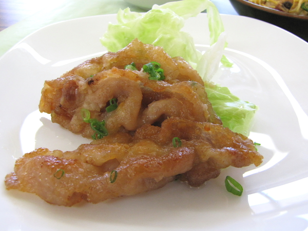

豚肉の味噌照り焼き

材 料 （2人分）
| 豚ロース薄切り | 100g |
| 片栗粉 | 大さじ2 |
| 油 | 大さじ2 |
| 小ネギ | 5g |
| 調味料 | |
| 味噌 | 小さじ2 |
| 酒 | 大さじ1 |
| みりん | 小さじ2 |
| しょうゆ | 小さじ1 |
| 砂糖 | 1/2 ～ 1 |
| おろしショウガ | 10g |
| 付け合せ | |
| レタス | 30g |
| マヨネーズ | 10g |
作り方
| 1 | 豚ロース薄切り肉に片栗粉を両面に付け、軽くはたいておく。 |
| 2 | フライパンに多めの油を熱し、1を両面返しながらこんがりと焼く。 |
| 3 | 2のフライパンの余分な油をペーパーでふき取り、調味料を混ぜ入れ、 豚肉にからめ合わせる。 |
| 4 | 皿に水にさらしたちぎりレタスを置き、3を盛り付け、小葱の小口切りを散らす。 マヨネーズを添える。 |